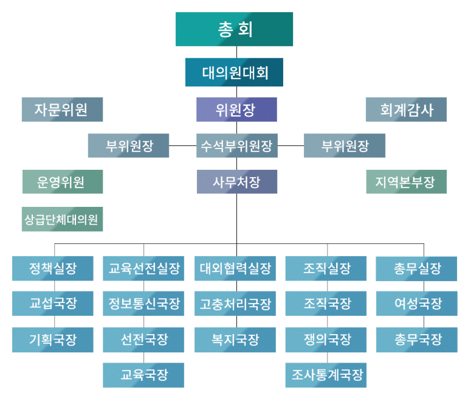

위원장 소개
홈 조합소개 위원장 소개
위원장 소개
조직도

한국국토정보공사노동조합
선 언
한국국토정보공사노동조합 조합원 일동은 민주화의 도도한 흐름과 호흡을 함께 하면서 진정한 동지애로 강철같이 단결하여 어떠한 형태의 부당한 탄압이나 간섭에도 굴하지 않고 자주적이고 민주적인 조합을 운영함으로써, 우리 자신의 노동권을 확립하여 정치적, 경제적, 사회적, 지위향상을 기한다.
우리는 공사내의 전근대적 비민주성을 척결하고 우리 자신의 창발성을 최대한 발휘하여 국토정보의 발전에 노력하며 나아가 전문기술의 민족적 자립기반을 확립하고 사회공공성 강화에 이바지한다.
우리는 민주적인 모든 노동단체와의 연대강화를 통하여 노동운동의 정통성과 자주성을 지키며 결연한 단결력으로 민주복지국가 건설에 동참할 것을 엄숙히 선언한다.
2015년 6월 4일
한국국토정보공사노동조합